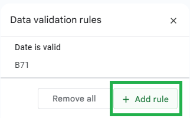
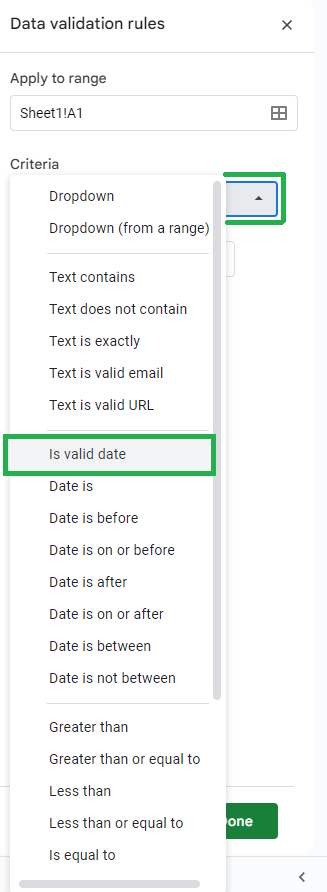
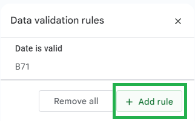
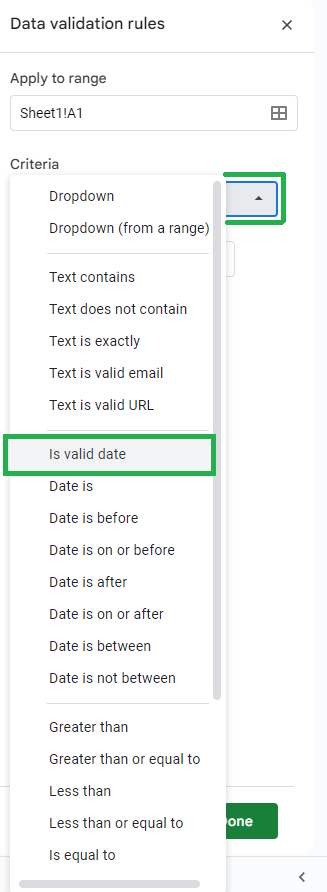

Google Sheets is one of the most popular spreadsheets to organize, analyze, and visualize data. This convenient tool can help you add dates to your document more efficiently and easily. The ways to input a date in a cell of the spreadsheet include:
- Manually entering dates by typing into a cell
- Using the formulas such as =date(YEAR, MONTH, DAY), =today(), =now()
- Using date pickers
Once the dates have been inputted into a cell, you can change the syntax of the date by doing the following customizations
- Default date number format
- Custom date and time format
- Changing locale for local date format
While it may be time consuming, the first method is the easiest and most reliable way to input a date into a cell.
Select a cell by left clicking in the box and type with your keyboard
DAY MONTH YEARMONTH DAY, YEARMONTH DAY, YEARMONTH/DAY/YEARMONTH-DAY-YEAR
The ways to write dates above will be recognized as dates and therefore, Google Sheets may assist in automatically creating a series or list of dates. Otherwise, dates will be interpreted as a string of text. Examples of what Google Sheets will NOT recognize include
MONTH DAY YEARThe DAY of MONTH YEARYou can enter a date by typing the DATE formula into a cell or the formula box. Using the formula method allows you to dynamically manipulate, change, extract components, and do formulaic calculations on the dates. You may also select other cells as arguments to fulfill the year, month, and day component.
Syntax: =DATE(year, month, day)
Note:inputs must be numerical
Inputs
=DATE(YEAR,MONTH,DAY)=DATE(A1,B1,C1)
Outputs:
MONTH/DAY/YEARMONTH/DAY/YEAR
If you want to enter today's date or today's date and time, you can input one of these formulas into a cell or a function box:
Syntax: =TODAY()
Syntax: =NOW()
Inputs
=TODAY()=NOW()
Outputs:
MONTH/DAY/YEARMONTH/DAY/YEAR TIME
The data validation method allows you to input dates via the dropdown menu of a calendar. This may be a more intuitive option
Select a cell and then select Data > Data Validation > Add Rule > Criteria > Is valid date > Show a warning > Done. Then double click on the cell and a calander will appear for you to pick a date.
 





An entered date that is not in the syntax of
MONTH/DAY/YEAR
may be converted to as such.
Select the cell with the date and then select Format > Number > Date

Inputs:
DAY MONTH YEARMONTH DAY, 2024MONTH DAY, 2024MONTH/DAY/YEARMONTH-DAY-YEAR
Outputs:
MONTH/DAY/YEARMONTH/DAY/YEARMONTH/DAY/YEARMONTH/DAY/YEARMONTH/DAY/YEAR
If you do not want the date to be in the format
MONTH/DAY/YEAR,
you can customize the way the date is presented.
Select the cell with the date and then select Format > Number > Custom date and time > Choose a format > Apply


Addition, if you are from a place where the formal or standardized way to write days is different such as (day, month, year), you can change your location by going to File > Settings > Locale > Change location > Save Settings


DATE - Google Docs Editors Help. (n.d.). Support.google.com. https://support.google.com/docs/answer/3092969?hl=en
How to Write Dates Correctly in English. (2019, April 25). How to Write Dates Correctly | Grammarly. https://www.grammarly.com/blog/how-to-write-dates/
NOW - Google Docs Editors Help. (n.d.). Support.google.com. https://support.google.com/docs/answer/3092981?hl=en-GB&sjid=14087525689645028504-NC
TODAY - Google Docs Editors Help. (n.d.). Support.google.com. https://support.google.com/docs/answer/3092984?hl=en
Zach. (2023, September 29). How to Insert a Date Picker in Google Sheets (With Example). Statology. https://www.statology.org/google-sheets-insert-date-picker/